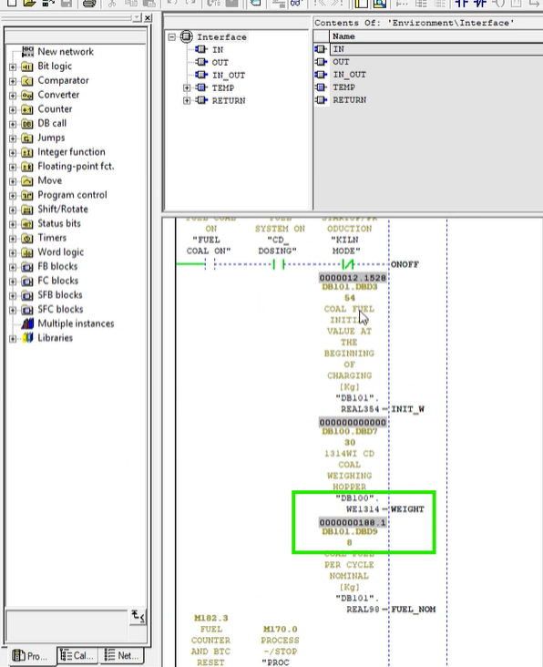
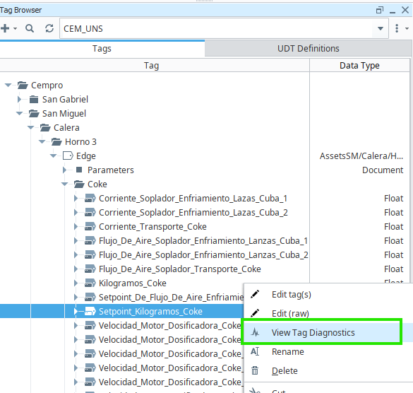
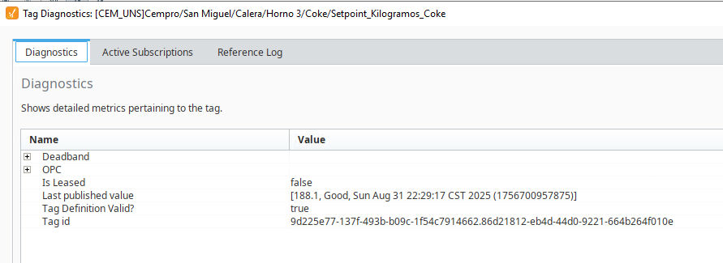
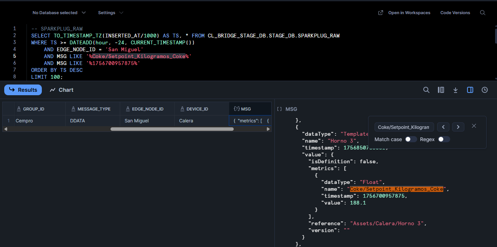

Validación del flujo de datos de la plataforma
Objetivo
Validar que un tag reporta el mismo valor (y marca de tiempo coherente) a lo largo del pipeline: SCADA → Ignition → Snowflake.
Alcance
Este procedimiento aplica a cualquier tag publicado en el UNS y transportado por el bridge hacia Snowflake.
Prerrequisitos
-
Acceso al SCADA de planta.
-
Acceso al Ignition Designer (o Gateway + Tag Browser).
-
Acceso a Snowflake (rol/warehouse con permisos de lectura en tabla RAW).
-
Conocer el OPC Path y UNS Path del tag a validar.
Flujo de validación (paso a paso)
-
Visualizar la tag en el SCADA
-
Ubicar el tag objetivo en la pantalla correspondiente del SCADA.
Figure 1. Captura de la tag en SCADA
-
-
Ver el dato en Ignition
-
Abrir el Tag Browser y localizar el tag. En este caso el UNS Path es
Cempro/San Miguel/Calera/Horno 3/Edge/Coke/Setpoint_Kilogramos_Coke. -
Clic derecho sobre la tag → View Diagnostics.
Figure 2. Ruta View Diagnostics -
Confirmar que el Value coincide con lo observado en SCADA.
Figure 3. Ignition - View Diagnostics del tag
-
-
Ver el dato en Snowflake
-
Usar la marca de tiempo identificada y el UNS Path (del Ignition) para consultar la tabla RAW.
-
Ejecutar una consulta como la siguiente (ajusta EDGE_NODE_ID, MSG LIKE y la ventana temporal):
-- SPARKPLUG_RAW SELECT TO_TIMESTAMP_TZ(INSERTED_AT/1000) AS TS, * FROM CL_BRIDGE_STAGE_DB.STAGE_DB.SPARKPLUG_RAW WHERE TS >= DATEADD(hour, -4, CURRENT_TIMESTAMP()) -- Ajustar según cuánto tiempo atrás se quiera buscar AND EDGE_NODE_ID = 'San Miguel' AND MSG LIKE '%Coke/Setpoint_Kilogramos_Coke%' AND MSG LIKE '%1756700957875%' ORDER BY TS DESC LIMIT 100; -
Buscar el campo MSG, seleccionar y buscar el path usando Ctrl + F
Figure 4. Query de verificación en Snowflake RAW -
Confirmar que el Value coincide con lo observado en SCADA e Ignition.
-
|
Criterios de aceptación
-
El Valor observado en SCADA coincide con el valor en Ignition.
-
El Valor e información del payload en Snowflake corresponden a la misma medición (considerando conversión horaria).
-
La Calidad/Quality del tag en Ignition es Good (o equivalente).
-
Si el valor cambió, se evidencian los nuevos valores en los tres sistemas dentro de un intervalo razonable.
Solución de problemas (rápidos)
-
No aparece en Snowflake: amplía la ventana
DATEADD, y confirma EDGE_NODE_ID y UNS Path. Verifica el estado del bridge y latencia. -
Timestamps no coinciden: valida huso horario (UTC vs local) y desfases de NTP en servidores.
-
Valor distinto en Ignition vs SCADA: revisa OPC Item Path y Server en las propiedades del tag; puede existir un mapeo obsoleto.